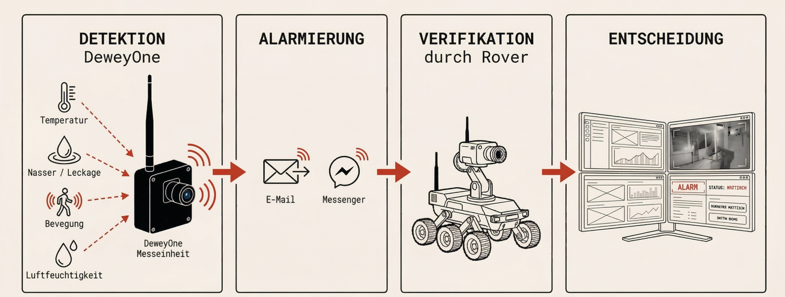
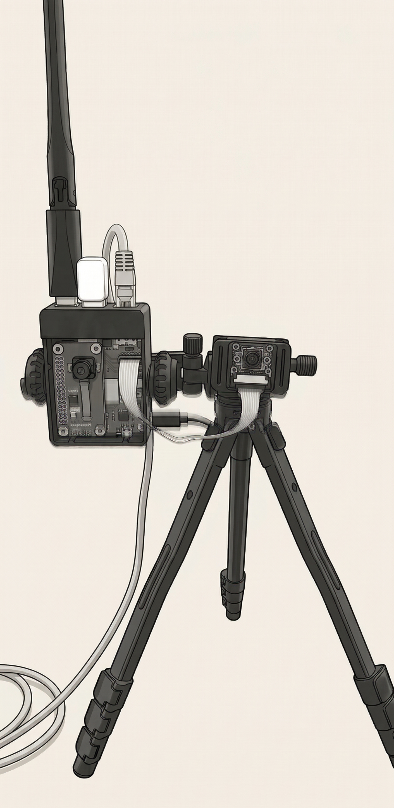
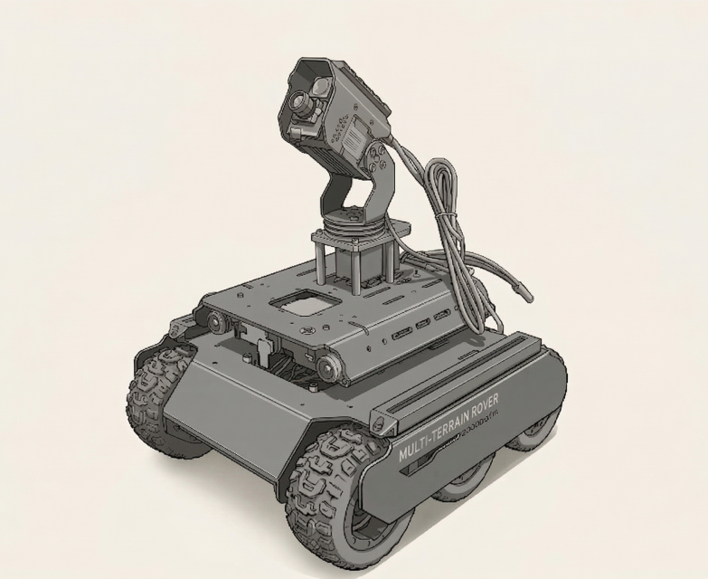

Wir schicken Roboter. Und Differentialgleichungen.
Monitoring · Simulation · Robotik
Das Problem
Kommunale Gebäude stehen nachts leer. Einbrüche, Wasserschäden, Heizungsausfälle, Energieverschwendung — die Folgen kennen alle. Was fehlt ist kein Wachdienst und keine Kamera. Es ist ein System das dauerhaft misst, versteht und alarmiert — ohne Datenschutzprobleme, ohne geschultes Personal, ohne teure Infrastruktur.
Was wir machen
Wir kombinieren permanente Sensormessung, autonome Roboterbegehung und bauphysikalische Simulation zu einem vollständig betreuten Service.
So funktioniert es bei Alarm
Sensor schlägt an — Alarm geht raus — Rover fährt zur Quelle — Sie entscheiden remote.

Die Hardware
Eigene Geräte, offene Protokolle — kein proprietäres Ökosystem.

DeweyOne
→ WiFi Access Point
→ Zigbee · Z-Wave · WiFi Sensoren
→ 4G / LTE Anbindung
→ RGB-Kamera
→ Wärmebildkamera
→ Remote-Zugriff zur Wartung

Rover
→ 6-Wheel Drive
→ RGB-Kamera · Pan-Tilt
→ Remote-Steuerung
→ Zigbee · Z-Wave Sensoren
→ 4G / LTE Anbindung
→ LiDAR · Autonome Erkundung (folgt)
Wer wir sind
Physik trifft Handwerk — aus Esslingen. Wir glauben dass kommunale Gebäude besser, günstiger und klimafreundlicher betrieben werden können. Ohne Konzern. Ohne Vendor Lock-in.
Pilotpartner gesucht
Kommunen die jetzt einsteigen gestalten das System mit — und bekommen eine Lösung die von Anfang an auf ihre Gebäude zugeschnitten ist.
Wir kommen vorbei, schauen uns das Gebäude an und installieren die Sensortechnik. Schäden früher erkennen, Energie im Blick, kein IT-Aufwand auf eurer Seite. Keine versteckten Kosten.
Schreibt uns — wir melden uns.
Gespräch anfragenpilot@buildingsandphotons.de · Buildings & Photons · Esslingen am Neckar